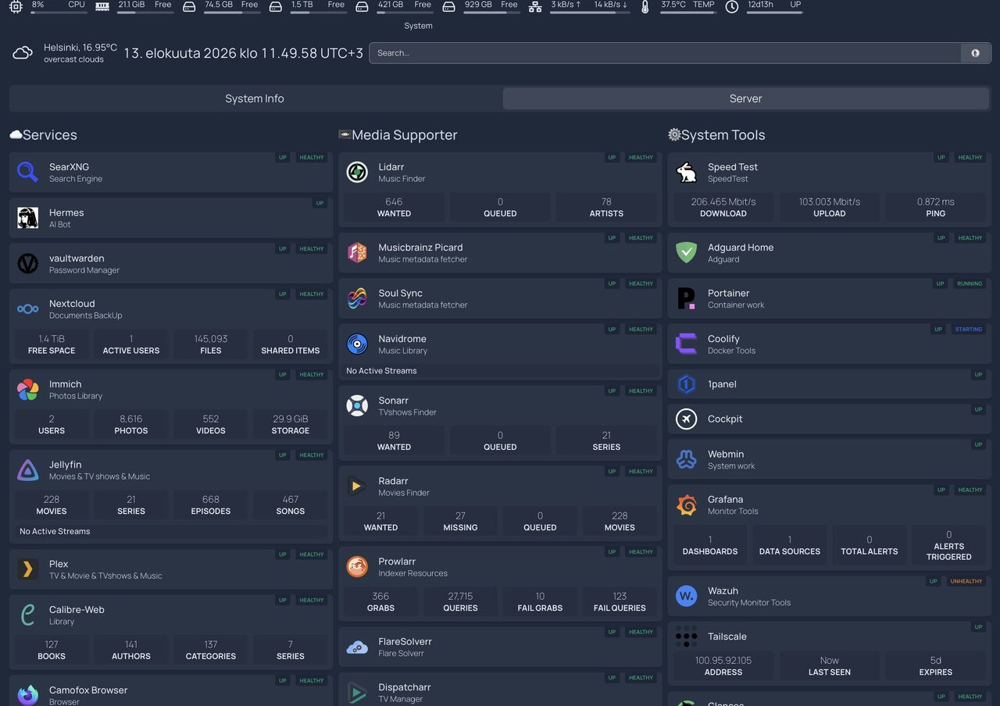

Linux / Self-hosted Linux lab
My own small piece of infrastructure.
A Linux home lab for self-hosted applications, deployments and monitoring.
Personal infrastructure · Ubuntu · Helsinki

View full size ↗- Operating system
- Ubuntu 24.04 LTS
- Logical CPUs
- 12
- Usable memory
- 31 GiB
- Host
- Deploy
- Observe
- Maintain
The platform
The lab runs Ubuntu 24.04 LTS on an x86-64 host. Its monitoring reports 12 logical CPUs and approximately 31 GiB of usable memory. It gives my applications a persistent environment beyond a development laptop.
Useful services, running together
The dashboard brings together SearXNG for search, Nextcloud for documents, Immich for photos, and a media collection served through applications such as Jellyfin and Navidrome. Vaultwarden and AdGuard Home also appear in the service catalogue. These are self-hosted applications that I configure and operate; their underlying software is developed by their respective projects.
A layer for deployment and operations
Coolify and Portainer provide tools for managing applications and containers. The dashboard also includes Cockpit, Webmin and 1Panel for system administration, with Tailscale listed for remote connectivity. The lab brings these operational tools into the same overview as the services they support.
Visibility into the host and services
Prometheus collects metrics, including host information from Node Exporter, and Grafana provides the dashboard layer. In the read-only check on 10 September 2026, the Grafana, Node Exporter and Prometheus scrape targets were all up. This is a point-in-time check, not an uptime guarantee for every application.
What this project demonstrates
This project is about running a useful environment: Linux administration, application hosting, container tooling, and metrics-based observation. It complements my software projects with the infrastructure needed to run and inspect services after deployment.
Project evidence
The dashboard image was supplied from my own server. Platform and monitoring details were checked through its read-only Prometheus API on 10 September 2026; the Coolify login endpoint was also reachable. The lab itself is private. A walkthrough can show the configuration and day-to-day operating workflow.
- Ubuntu
- Linux
- Docker
- Coolify
- Portainer
- Prometheus
- Grafana